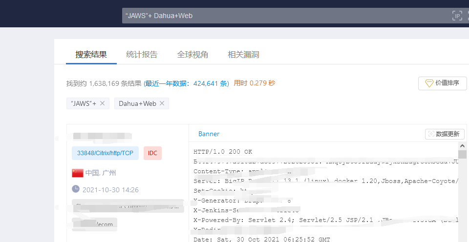
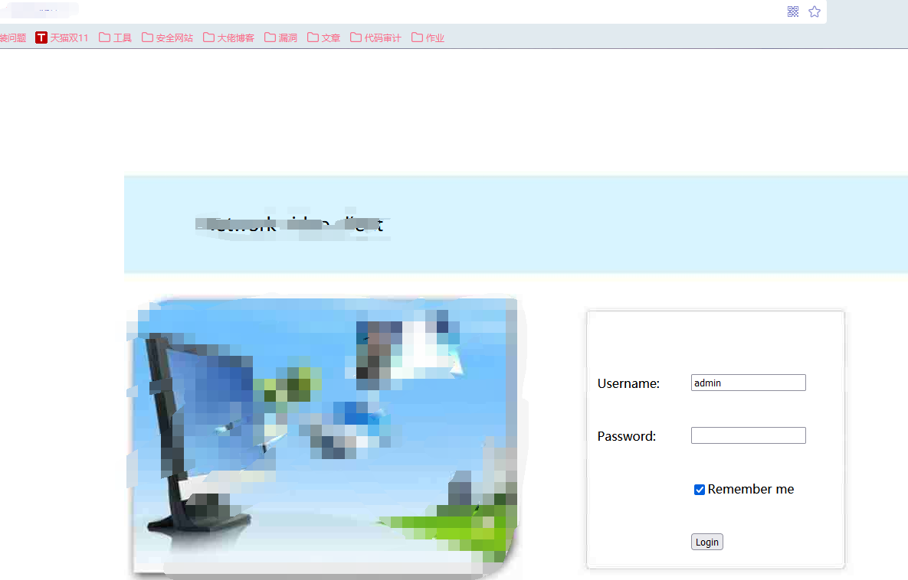
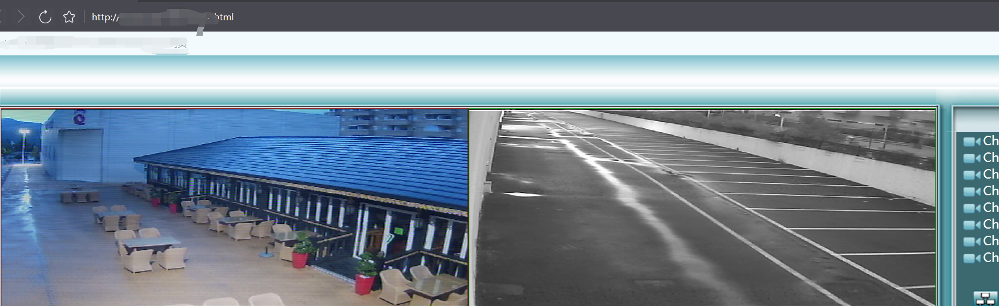

search---摄像头弱口令
十月 30, 2021
前言
渗透课之练习zoomeye等黑暗引擎搜索工控设备等的用法。
SEARCH
在网上找了一些常见的摄像头弱口令和漏洞设备的关键词，在zoomeye中进行查找。输入的查找关键词是“JAWS”+ Dahua+Web：

然后就一个个打开尝试进行弱口令登录，大华该版本的摄像头弱口令为用户名：admin，密码留空，多试几个然后发现成功登录到后台，播放监控需要安装插件，所以就安装了一个flash，在flash player中打开对应弱口令网站，就能看到图像。


查看评论